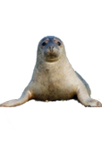
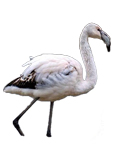
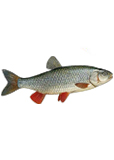
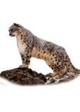

-

Каспийская нерпа
Единственным морским млекопитающим, встречающимся в Казахстане, является каспийская нерпа (Phoca caspica). Было подсчитано, что в начале XX века в каспийском море обитало около
-

Фламинго
Географическое положения и разнообразия ландшафтов Казахстана, обеспечивают убежище около 500-м видам птиц, в том числе 396 гнездящихся видов, остальные - мигрирующие или зимующие виды.
-

Голавль
Достигает в длину 80 см, вес до 8 кг. Массивная голова чуть-чуть приплюснута сверху, лоб широкий, чешуя достаточно крупная. В боковой линии 44—46 чешуи; 8—11 коротких и очень грубых жаберных тычинок
-

Снежный барс
Благодаря своей физической протяженности и контрасту мест обитания, Казахстан славиться большим разнообразием животного мира.